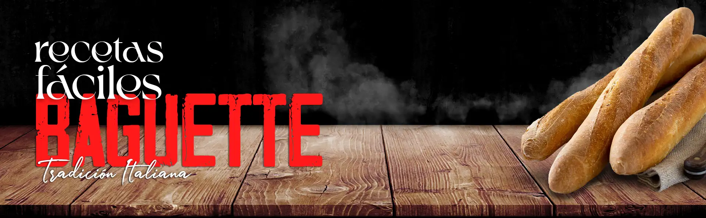
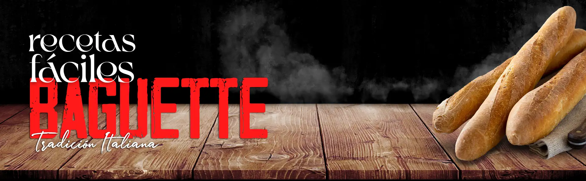

Baguette Francesa
El pan baguette es uno de los más populares en Francia, y es conocido por su corteza crujiente y su interior suave y esponjoso. Con esta receta, podrás preparar tu propio pan baguette desde la comodidad de tu hogar.
Ingredientes necesarios
- 500 gramos de harina de trigo.
- 10 gramos de sal.
- 20 gramos de levadura fresca.
- 350 ml de agua tibia.
Preparación
- Mezcla la harina, la sal y la levadura en un bol grande.
- Agrega el agua tibia poco a poco, mientras mezclas con una cuchara o una espátula de madera. Continúa mezclando hasta que la masa quede suave y homogénea.
- Coloca la masa sobre una superficie lisa y amasa durante 10 minutos hasta que quede suave y elástica.
- Forma una bola con la masa y colócala en un bol engrasado. Cubre con un paño húmedo y deja reposar en un lugar cálido durante aproximadamente una hora, o hasta que la masa haya duplicado su tamaño.
- Prepara una bandeja para hornear cubriéndola con papel encerado o enharinándola ligeramente.
- Después de que la masa haya crecido, amásala por unos minutos más y luego divídela en tres partes iguales. Forma cada parte en una forma de baguette, estirando la masa hacia afuera y luego enrollándola.
- Coloca las baguettes en la bandeja preparada, dejando suficiente espacio entre cada una para que puedan expandirse. Cubre con un paño húmedo y deja reposar por 30 minutos más.
- Precalienta el horno a 220 grados Celsius.
- Antes de hornear, haz unos cortes diagonales en la parte superior de cada baguette con un cuchillo afilado. Hornea las baguettes durante 25-30 minutos o hasta que estén doradas y crujientes por fuera.
- Saca las baguettes del horno y deja enfriar antes de cortar y servir. Disfruta de tu pan baguette recién hecho con mantequilla, queso o cualquier otro acompañante que desees y... A disfrutar!!!